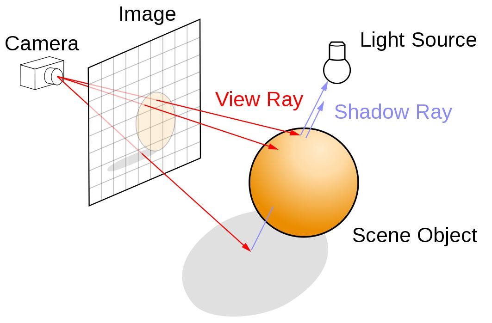
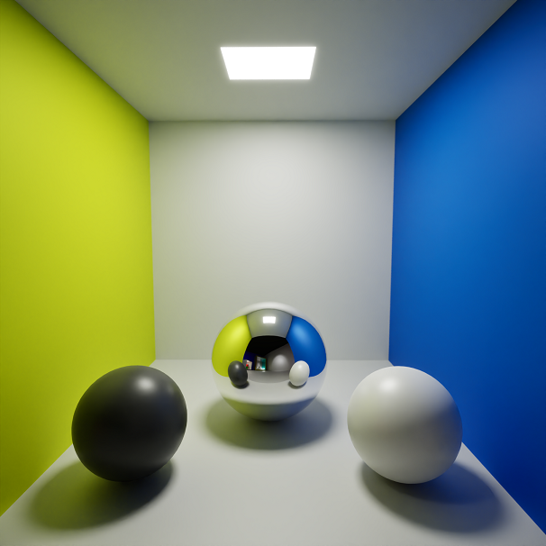
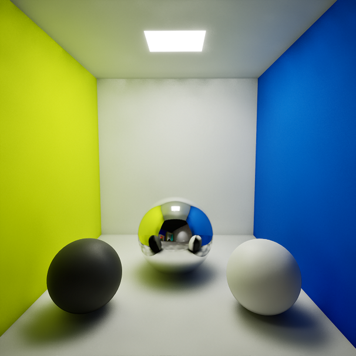
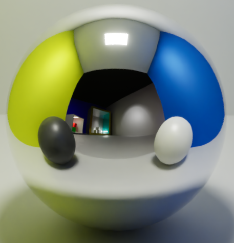
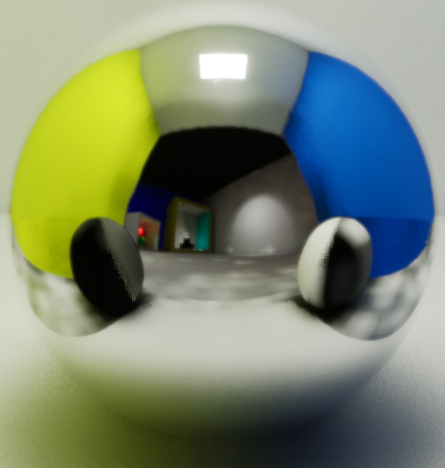
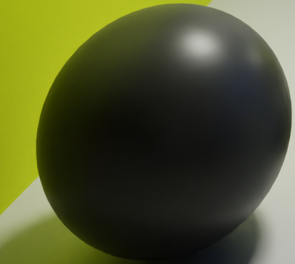
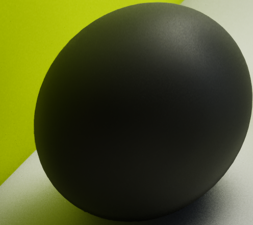
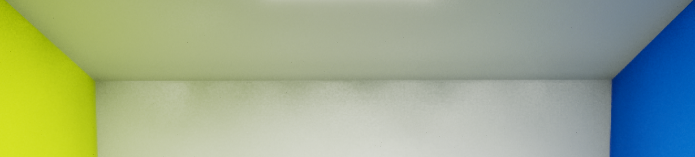
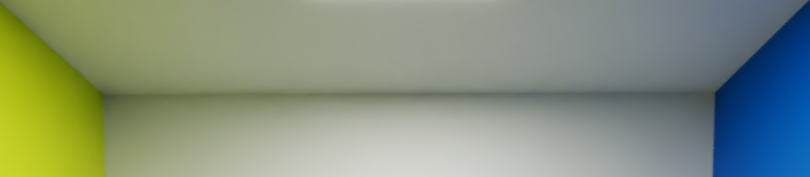

"Path(Ray) tracing" houma zouz partiyét:
1.a. "path": el thneyya mel camera lel objet
1.b. "ray": el rayon eli bech yemchi m'el camera l'el objet fi el'scene
2. "tracing": traçage mtaƐ el thneyya.
Houni, el ray yq̈addem mel camera w ychouf chƐand'na f'el scene.
Ken yelq̈a objet, ylawwén el pixela f'el écran b'couleur l'objet, w fel Ɛada fama rays Ɛla 9ad nombre el pixelét.

Kima tchouf f'el image hedhi, el camera teb3ath rays w t'analyzi el couleur f'el scene.
Ken lq̈àt objet, trajƐelna couleur l'objet lel pixel, sinon, twalli pixela kaħla.
Mafamech ken el "View Ray", fama zeda "Shadow Ray".
El dhol(Shadows) houma resultat el position mtaƐ objet binnesba lel dhaw.
Houma el zouz yestaƐmlou nafs el technique, ama famma nuance.
"Path tracing" yrakkez akther Ɛal details,
w ykounou el details mtaƐ l'interaction mƐa el dhaw asaħ.
Path tracing mostaƐmel akthar f'el softwares eli ykharjou renders khaw,
win el waq̈t mayhemmech barcha, kima el softwares lel 3D renders principalement.
Example:
- Visualization mtaƐ l'architecture (VRay, Corona...).
- Aflèm (Blender Eevee, Octane Render...)
Example path tracing (ħabbetelha 60 seconds b'RTX 4070):

"Ray tracing" mostaƐmel akthar f'el real-time renders.
"Real-time" maƐneha lezem ykoun el render 60 fps
wela akthar (kima el video games).
Example ray tracing (ħabbetelha 0.016 seconds b'RTX 4070):

Kima tchoufou, el zouz fihom barcha des details w techniquèt kima:
- Reflection (el reflet Ɛal sphere eli bel ħdiid)
- Global illumination (el loun mtaƐ les objets yetbaddel b couleur el ħiit)
- Ambient occlusion (el partiyét el ghamq̈iin fel coinèt)
- etc.
Ama el resultat yoq̈Ɛed moch kifkif.
Nzoumiew Ɛal sphere el westaniyya w nchoufou bech nthabtou fel reflet.
Awel ħaja ennajmou nleħdhouha houni heya el "Reflection".
El path tracing yekhou raħtou fel waq̈t bech ykharjelna aħsan resultat.
Kima tchouf houni, el reflet mtaƐ el spheres wadhaħ w ħatta el Cornell Boxes eli maħtoutin bƐàd yetchefou f'el reflet.

Par contre el resultat mtaƐ el ray tracing mahoch précis, w'el dhol mtaƐ el spheres eli 3la jnab dekhil baƐdhou.
Zid zyeda el resolution mtaƐ el reflection tayħa, w'el taswira flou chwayya.
Houwa sħiħ, famma barcha settings(parameters) ennajmou nbadlouhom bech nħasnou el qualité, ama sƐib bech toq̈reb m'el resultat mtaƐ el path tracing mangheir ma'ttiħ Ɛal 60 fps.

El mochkel houni eli bech nħassnou el qualité, yelzem el ray eli nebaƐthouh ybounci (ybambi) Ɛal surface mteƐ el spheres w yƐawed ythabbet el dhol barcha marràt... etc.
W'aħna limité el youm b'el hardware mteƐna w ma'najmouch nħottouh yeħseb barcha ħweyij.
El problème lekher, eli houwa el "path tracing" yebƐath ħasb el taq̈riib 1 ray Ɛla kol pixel, w hedheya yekel barcha resources mel PC mteƐna (que ce soit Ɛal CPU wela el GPU).
Ken tleħdhou, el reflection fel "ray tracing" flou Ɛla khaterha aq̈al men 1 ray par pixel, w hakka el resolution mteƐ el reflection maheyech q̈ad el resolution mteƐ el scene f'el ecran.
Nzoumiew Ɛal ysàr.
Kima tchoufou l'impact mtaƐ loun el q̈àƐa(abyath) w loun el ħiit(asfar) Ɛal sphere wadhaħ. El sphere mteƐna matreflectich el dhaw barcha ama tekhou el couleur mtaƐ les objets eli baħdheha. El effet hedheya esmou "Global Illumination".

Taw, ki nchoufou el resultat mtaƐ el ray tracing, nelq̈aw eli mahowech b'nafs el qualité.
El details mta3 l'environment Ɛal sphere mahoumech wadh'ħiin kima el path tracing.

Nzoumiew Ɛal coin el fouq̈ani.
Hedhi wadhħa bel behi. L'ambient occlusion (El partie el ghamq̈a eli fel coin) mahiyech b'nafs el qualité.
Famma des techniques bech n'ħasnouha ama yoq̈Ɛed el resultat moch kifkif, surtout ken nħebbou ykoun el FPS 60 wela akthar.
Ray tracing:

Path tracing:

Hedhi juste introduction tfassar el farq̈ w taƐti idée Ɛla quelques implementations.
Ken tħeb t'implementi path tracer kemel, nanssħek bel kteb hedheya:
Ray Tracing in One Weekend,
w ken Ɛejbek, aƐmel talla Ɛla el serie kémla.
Eq̈tiraħét: sdf - basics | shaders | Home